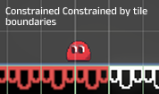
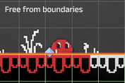

OVERVIEW
This is a non-linear, combat-free Metroidvania focused on exploration and puzzle-solving. Without explicit instructions, players discover hidden abilities through experimentation and environmental cues.
Color is both a tool and a form of expression. Players coloring the world as they move through it, they reshape their surroundings, unlock new possibilities, and leave behind a visible trail of their journey.
DESIGN PROCESS
Mechanical Design: Color Abilities
There are three primary colors and three secondary (mixed) colors. Each color represents a unique ability and interacts differently with the environment.
RED: FIRE
Shoots a fireball in a parabolic arc.
The direction and power are chargeable, allowing precise aiming over obstacles.
 Thermodynamics
Thermodynamics
Radiates heat to melt nearby ice blocks within a specific radius, clearing paths or releasing trapped objects.
 Reaction: High Bounce
Reaction: High Bounce
Red on Yellow tile → High bounce
Yellow on Red tile → High bounce
These interactions make the player jump higher than normal.
BLUE: ICE & WATER
Blue represents cold and solid states. It allows the player to manipulate water sources and traverse aquatic environments.
 Ice Creation
Ice Creation
Instantly create a solid ice blocks.
These blocks can be used as platforms to reach higher areas or as weights for
puzzles.
 Underwater Movement
Underwater Movement
The Blue form allows the player to swim freely underwater.
Allows full 360-degree movement control while submerged, ignoring normal gravity
rules.
YELLOW: GRAVITY & ELECTRICITY
 Gravity Inversion
Gravity Inversion
Inverts local gravity when touching yellow surfaces.
Allows the player to walk on ceilings and navigate complex
vertical puzzles.
 Conductivity
Conductivity
Acts as a power source to activate machinery.
Electricity can travel through conductive objects (including water) to
trigger distant mechanisms.

GREEN: GROWTH
Core Property: Nature.
Green ink stimulates rapid plant growth. It creates lifting vine platforms that rise
vertically like a slow elevator,
allowing players to reach higher or distant areas.

PURPLE: MAGNETIC
Core Property: Mid-Air Suspension.
Purple allows the player to hover between red and blue platforms, giving limited control
in mid-air.
The player can only move left and right while hovering.

ORANGE: BLAST
Core Property: Counter-Impulse.
Orange applies a force opposite to the player's current movement direction, resulting in
a burst of forward momentum.
Switching to orange mid-jump creates an additional forward boost—functioning like a
directional double-jump.
Level Design: Non-Linear Exploration
Each stage of the game is themed around a specific color, and its puzzles are designed to highlight the unique abilities tied to that color. As players progress, later stages combine multiple colors, creating more complex interactions and cooperative mechanics. Currently, the first three stages are implemented.
- Teaches basic movement and the coloring mechanic.
- Introduces the achievement system for early engagement. In the final map, a shortcut will lead back here, allowing players to revisit.
- Offers multiple paths, with some areas currently inaccessible.
- Collectibles often require experimentation or must be revisited with unlocked abilities.
- Regardless of the chosen route, before entering the next level, the player will have learned how to use the fireball's burning ability and understand the basic mechanics of color gates.
- The level progresses linearly from the Pink Route to the Light Blue Route.
- Pink Route introduces essential blue-ink mechanics—swimming and creating ice platforms.
- Light Blue Route focuses on the advanced application of blue mechanics — melting ice with red, using frozen blocks to press switches, and using pipes with melting ice to trigger multiple switches.
TECHNICAL IMPLEMENTATION
Coloring is one of the core mechanics of the game, and I invested significant effort into building a system that feels smooth and efficient.
Coloring by detecting the player's collisions with the tilemap.
 Limitation:- The coloring constrained by tile boundaries.
- Difficult for saved game.
Switched to shader-based solution by using RenderTexture system.
 Advantage:- An Ink Mask layer is rendered on top of the map.
- The player's world position is used to draw color directly onto this mask in real time.
- A mask texture is used to restrict coloring only to designated white areas of the map.
Regional Ink Masks for Performance Optimization.
Problem:- Needed for mechanics like “player reacts to the color underfoot.”
- GPU-to-CPU readback from a large, high-resolution Ink Mask caused frame drops.
- Divided the map into multiple regions, each with its own smaller Ink Mask.
- At runtime, the system calculates which region the player is in and only reads from the corresponding small Ink Mask. The performance was much better.